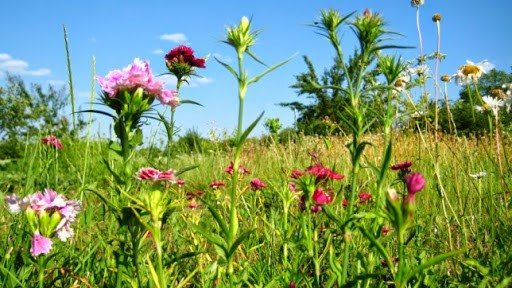

Росли́ни (Plantae), або зелені рослини (Viridiplantae) — царство живих організмів. Назва Viridiplantae була запропонована у 1981році, щоб відрізнити представників царства від попереднього визначення рослин, які до того не утворювали монофілетичну групу. Також царство відоме під назвою Chlorobionta або група Chlorophyta/Embryophyta. Більшість членів царства були включені до царства Рослини (Plantae) в 1866 Ернстом Геккелем.
Представники царства — автотрофні організми, для яких є характерною здатність до фотосинтезу та наявність щільної клітинної оболонки, яка утворена здебільшого целюлозою. Запасною речовиною у рослин є, як правило, крохмаль. Рослини є першою ланкою всіх харчових ланцюжків, так що від них залежить життя тварин. Вони є джерелом більш як десяти тисяч біологічно активних речовин, які діють на організм людини та тварин, зокрема при вживанні у їжу.
Вивченням рослин займається ботаніка.
